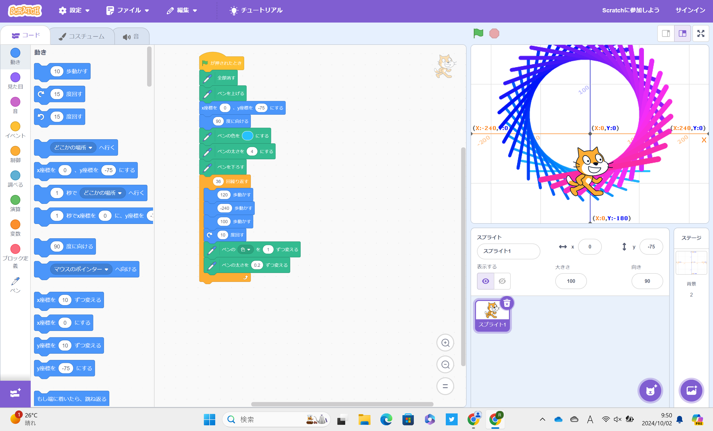
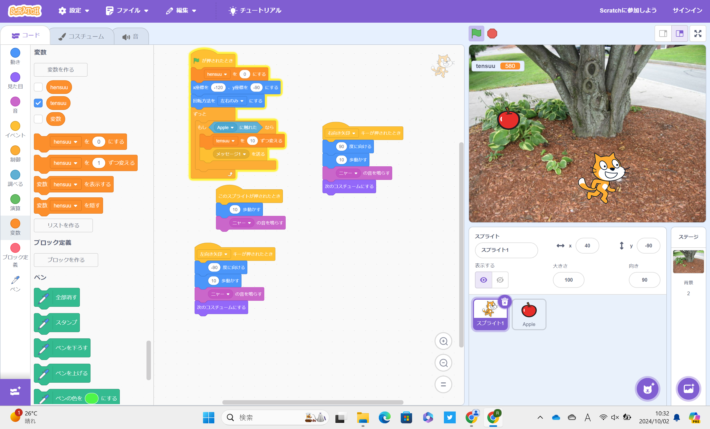

1週目のレポート ： 公大高専１年実習I-1
4b班31番 kentt
第1週目
1-1 サイエンスアート

1.内容
スクラッチを使って線を書くプログラムを作成した。規則的に線を動かすことで綺麗な線のアートを作った。
2.感想
スクラッチを使って作るプログラムは思っていたより簡単だった。また、線を動かす角度や距離を変えることでよりいろんな形を作ることができた。
1-2 ゲーム

1.内容
上から降ってくるリンゴをキャラクターを動かすことでとるゲームをスクラッチを使って作った。
2.感想
リンゴを降らせるプログラミングだけでも案外多くのプログラミングがあるんだなと感じた。リンゴの降らせ方が思い通りにいかなかったりした。実際のゲームもこのように作られているんだと思った。
1-3 ホームページ作成
私のホームページ
1.内容
GITHUBを使って自己紹介のホームページを作った。
2.感想
普段は見るだけのホームページを自分で作ってみて結構簡単にホームページが作れるんだと思った。
各ページへのリンク
1週目のレポート
2週目のレポート
3週目のレポート
私のホームページ